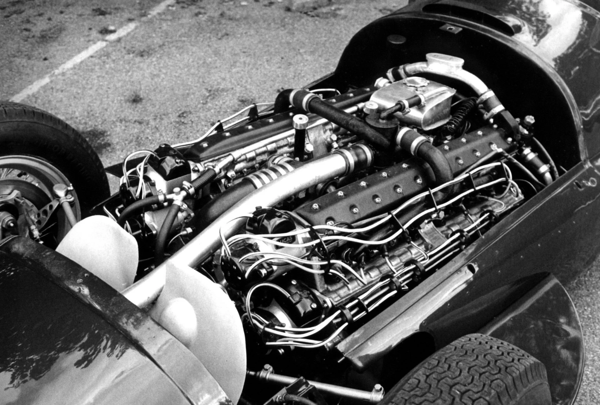
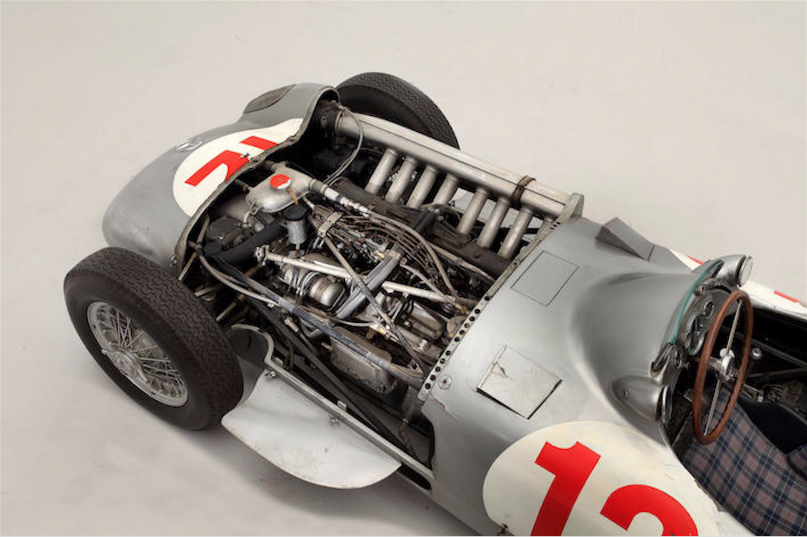
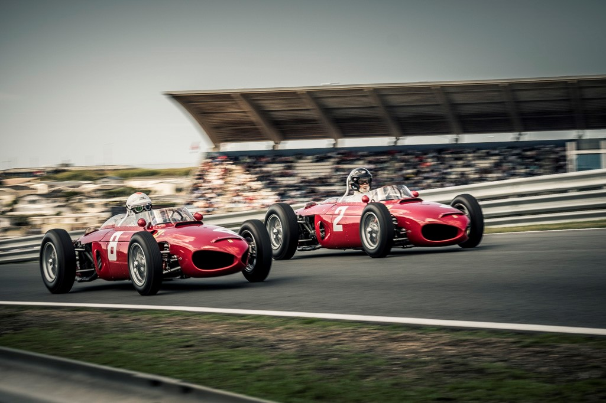
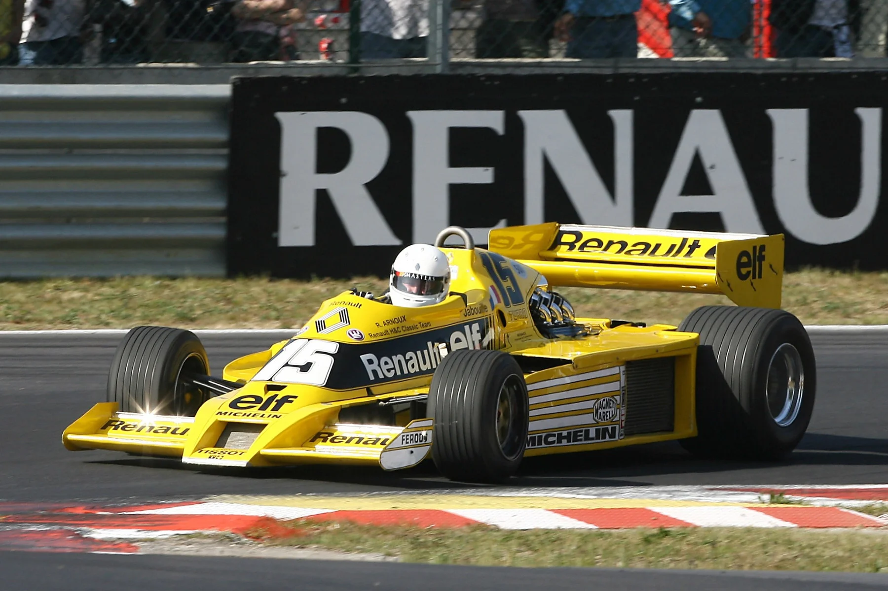
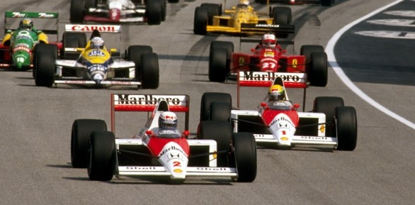
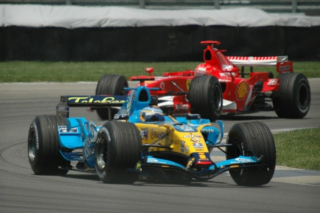
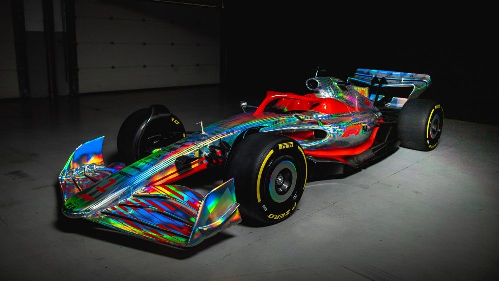

Nowadays (2022 season), F1 power units are formed by multiple components, 7 to be exact: ICE (internal combustion engine), TC (turbo charger), MGU-K (motor generator unit kinetic), MGU-H (motor generator unit heat), ES (energy store), CE (central electronics), EX (exhaust system). You’ve probably seen those elements when F1 shows us during Free Practices the “Power Unit Elements Used” statistic that ultimately determines certain penalties. You might be wondering what all of these components mean, but I’ll be tackling all of these soon enough in future posts. Today I’ll be focusing on the ICE and the way it’s evolved over years, mainly the engine or also known as the heart of the power unit.
1947
The modern era of F1 and its official drivers’ championship began in 1950, however we can talk about F1 engines before that and specifically starting in 1947. Very few things were restricted back then, for example: no specific layout was required, so engines could basically go anywhere, that’s why there was even a V16 – 16 cylinders. Even so, there is no championship without rules and Formula 1 did require some regarding the engine: 4.5 L for atmospheric and 1.5 L for supercharged. Now, I know this may sound from another world, but bear with me as I try to explain these little notions (we’ll need them later on as well).
Atmospheric engine = steam is drawn into the cylinder, which creates a vacuum, allowing the atmospheric pressure to move the piston
Supercharged engine = compressing gas and forcing air into the engine to produce power
Photograph: thedrive
1954
Not many changes were made, but the engines were reduced: 2.5 L now for the naturally aspirated (N.A.) – same as atmospheric, and only 750 cc for the supercharged. No one chose a supercharged for the next few years. Configuration was still not specified. Direct fuel injection was invented by Mercedes – still in F1 today. Engine was usually situated in front of the driver and Enzo Ferrari was one of the people who were sticking by that no matter what, however a different placement was used during these years by certain teams: behind the driver.
Photograph: petrolicious
1961
This year saw a massive change: not only was the atmospheric engine reduced down to 1.5 L, but also the supercharged ones were completely banned. Still, no certain layout is required. This was the period when everyone changed to mid-engined cars.
Photograph: volmeyer
1966
Superchargers were brought back and capacity was raised, 1.5 L. As for the N.A., it was back to 3.0 L. There is no configuration to talk about here either. A revolutionary DFV (double four valves, V8) also makes its entrance. Renault was the first team to introduce a turbocharger, but it was far from being anything reliable. One thing was clear though: turbocharging was going to be the future. These rules ran for quite some time, until 1985. Afterwards, turbochargers were in power, with every team running one of those. They were eventually banned after 1988.
Turbocharger = forced induction powered by exhaust gases
Photograph: readcars
1989
N.A. is the only type of engine left with a 3.5 L capacity. Honda was dominant with McLaren, seasons known for the rivalry between Senna and Prost. It was only in 1992 that Renault managed to end that domination, when Honda left the sport. The Renault engine was a V10. While engines kept developing, by the end of this era, the Ferrari V12 naturally aspirated engine became the most powerful V12 N.A. ever used in F1. Configuration allowed was maximum 12 cylinders.
Photograph: Jake McMillan
1995
The FIA (Federation Internationale de l’Automobile – governing body of motorsport) reduced the capacity of the engines to a 3.0 L, because the sport was becoming too fast, to the point where it was too unsafe. This became clear after Senna’s accident in 1994.1
2000
V10 engine became mandatory.
2006
Almost all teams were required to use a 2.4 L V8.
Photograph: Tionu Bao
2009
The hybrid era began, with 4 teams using such engines, so KERS makes its notable appearance (kinetic energy recovery system) – when the car braked, it stored energy in batteries that could be used later on. All teams agreed not to use the system in 2010, it making its return only in 2011 with almost all teams using it.

Photograph: F1
2014
A remarkable period of changes that would go down all the way to 2021. The engine officially became a power unit. The 2.4 L V8 would turn into a 1.6 L V6 hybrid engine. Systems for both kinetic and heat recovery were introduced and allowed. Turbochargers were back on and they made quite a comeback as all constructors chose to use them and became mandatory. KERS eventually changed its name to what we know it now as: MGU-K and the heat recovery system also became the MGU-H. The only engine manufacturers were Mercedes, Ferrari and Renault, with Honda returning with McLaren in 2015. Red Bull also chose a Honda engine for the 2019, 2020, 2021 season and AlphaTauri joining later on for the 2021 season. Mercedes dominated this period with 8 constructors’ and 7 drivers’ championships won.
Present
FIA introduces a series of regulations for the 2022-2025 seasons, which mostly change the chassis and the car’s aerodynamics. They fail to introduce the disappearance of the MGU-H. They did, however, change the fuel composition, which would ultimately determine a change in the way the engines’ function, having teams looking for new solutions. FIA is looking to make the sport greener, so that is one of the goals to be achieved in the future. The power units get frozen for the rest of the seasons and no major changes can be made.
Photograph: F1
Future
Regulations will be changed from 2026. Therefore, the MGU-H will finally be removed and MGU-K’s capacity will be increased to make up for the loss. FIA is also planning on introducing more limitations. An exciting thing that is to happen, is the entrance of a new engine manufacturer: Audi.
Formula 1 has hugely progressed over the last few years and that’s why it rightly so earned its name: the pinnacle of motorsport. With technologies set to keep evolving over the next few years, we’re rightfully looking towards a bright future.
In future posts, I will go more in-depth with the other components of the power unit, but I did feel like the heart of the car deserved a much better introduction and description as we wouldn’t have a car without it. Stay tunned for what comes next, cause I can only promise that I’ll bring even more fascinating ideas. Until next time, don’t forget to go racing!